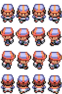

Dans cette simulation de gardien et d'intrus, l'esthétique joue un rôle fondamental pour renforcer l'expérience de jeu et l'immersion du joueur. Chaque sprite a été soigneusement conçu pour être à la fois clair, fonctionnel et représentatif du rôle qu’il incarne sur la grille de jeu. Que ce soit les déplacements du gardien, l’évasion des intrus ou l’interaction avec l’environnement, chaque élément visuel a son importance.Vous trouverez ici un aperçu détaillé des sprites utilisés dans le jeu, de leurs animations et de leur impact sur la mécanique de la simulation.
Sprites du Gardien
Le gardien, pilier de notre jeu, est représenté avec un design détaillé qui illustre sa préparation et sa détermination à sécuriser le terrain contre les intrus. Le sprite du gardien comprend une série d'animations complexes qui montrent non seulement ses mouvements de base comme la marche et la course, mais aussi ses réactions dynamiques lorsqu'il aperçoit ou capture un intrus. Ces animations sont conçues pour offrir un retour visuel immédiat sur l'état et les actions du gardien, permettant aux joueurs de comprendre intuitivement le déroulement du jeu.
fig 1: Gardien du parc
Sprites des Intrus
Les intrus, éléments clés de notre simulation, se distinguent par leurs sprites variés qui communiquent visuellement leur nature et leur stratégie
Intrus Statiques
Ces sprites sont subtilement conçus avec des textures et des couleurs qui se fondent dans l'environnement, illustrant leur capacité à se cacher en plain sight. Ils représentent un défi de perception pour le joueur et le gardien dans le jeu.

fig 2: Intrus Statiques
Intrus Dynamiques
Animés avec fluidité, ces sprites montrent des séquences de mouvement qui capturent leur tentative de manœuvrer autour du gardien. Leur design est intentionnellement plus vif et alerte, soulignant leur nature évasive et leur intelligence tactique en réaction aux mouvements du gardien.